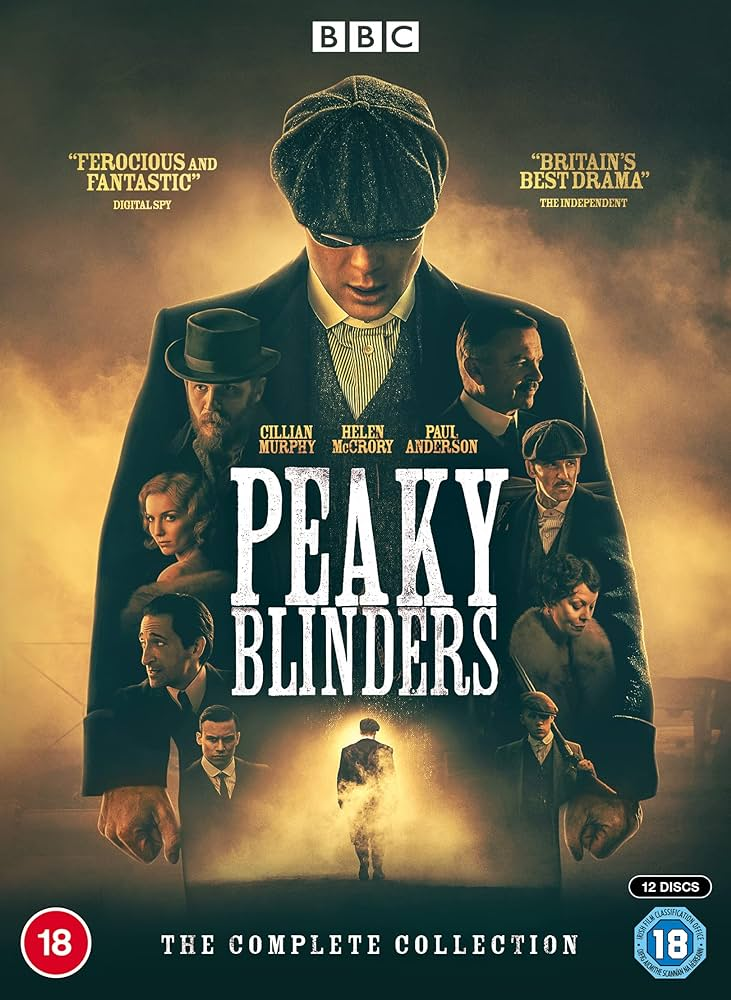
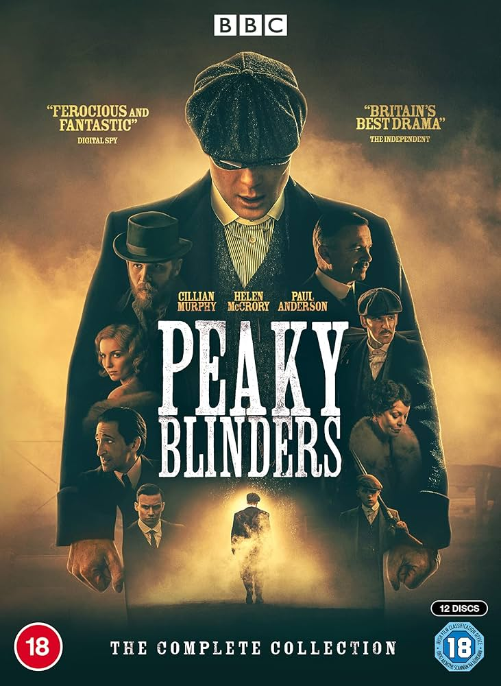
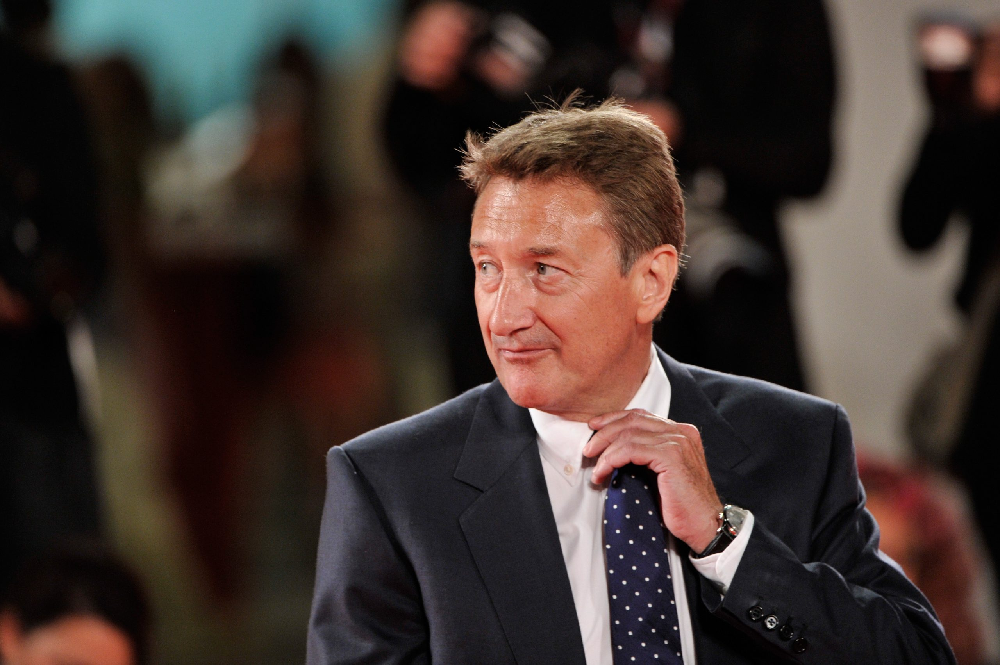

Notícias Importantes
Últimas atualizações e notícias importantes sobre Peaky Blinders...
Cillian Murphy como Tommy Shelby em Peaky Blinders
A sexta temporada de Peaky Blinders pode ter sido a última, mas o final de Tommy Shelby é deixado em aberto, visto que ainda há inimigos para ele derrotar. Um filme está em desenvolvimento para amarrar as pontas soltas e Cillian Murphy, que protagonizou a série, está disposto a voltar.
Tommy Shelby, personagem de Murphy, lutou contra a lei, sindicatos c riminosos rivais e a ascensão do fascismo na Grã-Bretanha pós-Primeira Guerra Mundial.
Embora Tommy tenha se afastado dessa vida no final da série em 2022, o criador da série, Steven Knight, vem desenvolvendo um filme spin-off, juntamente com uma possível prequela e uma série sequencial.
O ator refletiu sobre seu tempo no programa com o Desert Island Discs da BBC Radio 4 e falou se estaria disposto a retornar ao papel no próximo filme de Knight sobre Peaky Blinders.
Curiosidades
Descubra fatos fascinantes e curiosidades sobre a série...
8. Muito tempo e cuidado com os cortes de cabelo
Um dos elementos que mais chama a atenção na estética dos Peaky Blinders é o corte de cabelo. E isso não é por acaso. De acordo com a maquiadora da série, Loz Schiavo, a sua equipe analisou diversas fotos de homens da região de Birmingham da década de 1920 para definir qual seria a melhor referência. O resultado é que, além de ser um elemento marcante, o visual tem sido usado por fãs da série desde a sua 1ª temporada.
7. Cillian Murphy fumou cerca de mil cigarros em uma única temporada
Cillian Murphy decidiu entrar com tudo no seu personagem e, para isso, não pegou leve com os cigarros. Junto do figurino (e o já citado corte de cabelo), o cigarro é um elemento importante na construção dos personagens e ajudam a criar a ambientação. Por isso, apenas na 1ª temporada, Murphy teria fumado cerca de mil cigarros — a soma chega a três mil com a 2ª temporada. Porém, esses cigarros são fornecidos pelo departamento de adereços e feitos de ervas, sem a presença de agentes cancerígenos ou viciantes como a nicotina.
6. Sam Neill contratou Liam Neeson e Jason Nesbitt para ajudá-lo com seu sotaque
Sam Neill é responsável por interpretar o principal antagonista de Tommy Shelby nas duas primeiras temporadas de Peaky Blinders. E, para dar mais veracidade ao inspetor Campbell — um chefe de polícia de Belfast e de moralidade duvidosa —, Neill decidiu que seria importante trabalhar bem no seu sotaque. Para isso, ele contou com a ajuda de dois amigos para aperfeiçoá-lo: Jason Nesbitt e Liam Neeson.
A ideia era que o sotaque fosse parecido com o dos moradores da capital da Irlanda do Norte, mas compreensível para o público dos Estados Unidos. Apesar disso, nenhum dos atores é de Belfast. Nesbitt nasceu em Coleraine, e Neeson é de Ballymena.
5. Peaky Blinders é baseado em faroestes
Para o criador da série, Stephen Knight, o cinema western dos Estados Unidos ajudou a consolidar a imagem do cowboy como uma figura importante para a fundação do país. Já no cinema inglês, o mais próximo que existia disso eram os filmes medievais sobre cavaleiros nobres e nunca sobre pessoas marginalizadas.
Peaky Blinders buscou influências no faroeste, segundo Knight, desde a cena de abertura, com Tommy Shelby “cavalgando até a cidade” como todo herói cowboy solitário em um filme de faroeste. Birmingham deveria ter a mesma mistura de ilegalidade do Velho Oeste com o sentimento de oportunidade.
4. David Bowie era um grande fã da série
Steven Knight comentou em uma entrevista que o músico David Bowie era tão fã de Peaky Blinders que ele decidiu dar permissão para que músicas de seu último álbum fossem apresentadas na 3ª temporada da série.
Bowie enviou um representante de sua gravadora para fornecer uma audiência antecipada de seu último álbum, Blackstar, uma semana antes do anúncio oficial. “E então, na terça-feira seguinte, soubemos que ele havia falecido. Parece que sua equipe estava ansiosa para confirmar que poderíamos usá-lo antes que ele morresse”, disse Knight.
3. Jason Statham quase ficou com o papel de Thomas Shelby
Enquanto fazia a seleção de atores para a série, Steven Knight conversou com Jason Statham e Cillian Murphy em Los Angeles para discutir o papel de Thomas Shelby. No início, Knight havia optado por Statham devido à sua presença ser mais imponente. O que fez ele mudar de ideia foi uma mensagem que recebeu de Murphy dizendo: “Lembre-se, eu sou um ator”. O que indica que ele poderia incorporar o personagem da mesma maneira.
2. Tom Hardy e Charlotte Riley são casados na vida real
Alfie Solomons e May Carleton podem ter origens completamente diferentes na série, porém os atores Tom Hardy e Charlotte Riley são casados na vida real desde 2014. Os dois se conheceram em 2009, durante as gravações do drama de época Wuthering Heights. O primeiro filho do casal nasceu em outubro de 2015.
1. Cillian Murphy achava que Tommy Shelby morreria na 2ª temporada
Durante uma entrevista para a GQ, Cillian Murphy comentou que, enquanto lia seu roteiro, começou a pensar que Tommy Shelby morreria rapidamente. O ator disse que, como o personagem não tem medo da morte devido ao tempo que passou nas trincheiras durante a Primeira Guerra Mundial, ele é mais corajoso do que seus inimigos. Para Murphy, a maneira como as situações aconteciam no roteiro só poderiam levar à morte do personagem. Por sorte, não foi o que aconteceu!
Sobre a série
 

Explore a saga épica e a história por trás de Peaky Blinders...
Situado em Birmingham, na Inglaterra, segue as façanhas da gangue criminosa Peaky Blinders logo após a Primeira Guerra Mundial. A gangue fictícia é vagamente baseada em uma gangue urbana de jovens reais de mesmo nome que esteve ativa na cidade de 1890 a 1910.
Diretor
Conheça o visionário por trás da câmera...